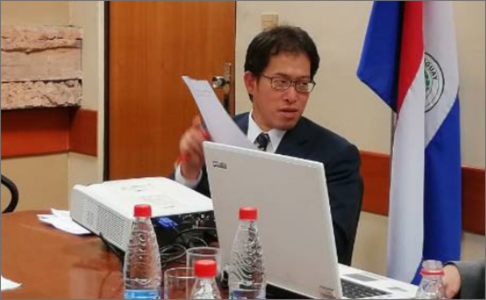
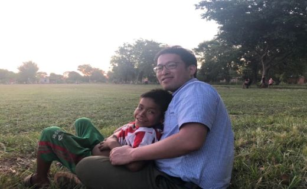

卒業生の声
大学院での学びを農業・
農村開発分野の研究に活かす

小谷博光
人間環境大学人間環境学部環境科学科 助教
2018年卒業
指導教員：藤掛洋子
研究テーマ：
パラグアイにおける農業・生活改善普及事業をめぐるせめぎ合い―開発アクターとジェンダー主流化に着目して―
Q1.当領域への進学の経緯
2007年から2009年まで、南米のほぼ中央に位置するパラグアイ共和国で、青年海外協力隊として野菜栽培を教えていました。パラグアイの農村地域に派遣され、パラグアイ人のご家庭にホームステイしながら、どっぷりとパラグアイ人の生活に浸りました。
そこで感じたのは、歴史的また文化的な背景が日本とは大きくことなるパラグアイにおいても、そこに住む人々の温かさや親切さ、年長者に対する価値観など、多くの面で根底は共通しており親近感を持てたことでした。
その体験から、以前にも増して「人間」や「異文化」、「国際協力」などのキーワードに敏感となりました。それに加え、後述する私の人生の目標を実現させるため、人類学と国際協力、開発援助を研究してみたいとの思いを強くするようになりました。
都市イノベーション学府で学びたいと思った理由は、パラグアイの農村開発を人類学の視点から研究している教員が在籍していることが大きかったです。それに加え、アフリカや中米などをフィールドとして、ミクロな視点から研究テーマに迫る手法を取っていた人類学の教員が在籍されておられたので、私自身の研究を進めるにあたり、多面的な助言が頂けるのではないかと考えたからです。
Q2.大学院卒業から、現職までの経緯
大学院修了後は、それまで継続していた大学の非常勤講師を続けなら、外国人留学生を受けいれている専門学校に就職しました。
しかし、元々、大学院で扱っていた国際協力における農業開発や農村開発を研究し続けたいと考えておりましたので、愛知県岡崎市にある人間環境大学に転職しました。
Q3.院生活が現在にどのように活きているか
大学院在籍時には、大学や学外の団体から支援を頂き、たびたびフィールド調査に行かせてもらいました。インタビュー対象者との接し方や文献調査の方法、調査データの分析など多くの研究手法について学びました。
また国内外において、シンポジウムでの発表や開催者側の人間として準備などに携わらせて頂きました。これらの経験は、就職した人間環境大学においても大いに活かされており、2020年2月にはパラグアイで農業普及に関するシンポジウムを現地の大学と共催し、私や引率した学生もスペイン語で口頭発表を行いました。
また大学院在籍時には、「国際支援政策特論」や「途上地域発展特論」などの授業を履修しました。授業では、開発途上国に住む人々の文化的・社会的な事象を、どの様に学術的に受け止め分析・解釈するのかを学びました。現在、私は「国際協力論」や「環境と開発」、質的調査の手法を学ぶ「社会分析論Ⅰ」といった科目を担当しており、都市イノベーション学府で学んだことが大変役に立っています。
Q4.今後の目標
青年海外協力隊に参加した際、特に開発途上国の農村地域では農業を生業とする人々が大多数であるにもかかわらず、日々の生活が不安定で先を見通せない人々が多いと痛感したことから、目標設定がスタートしました。
まず、私は人生の目標を「お金をかけずに安定的かつ容易に使える農業技術を農村地域の人々に普及し、日々の食料を安定的に生産し食に関する不安を減少させる」ことにしました。そのため、私は他大学の修士課程で、イチゴを温湯に浸漬させることでイチゴの抵抗性を上げ農薬の使用量を削減させる、持続可能な農業技術に取り組みました。博士課程では農業技術を普及させる際に重要な開発途上国の人々の文化的・社会的な環境を理解することに努めました。今後は、長い期間をかけて、上記の人生の目標を実現させるよう精進していきたいと考えています。
Q5.後輩へのアドバイス
まずは自分の熱中できることをみつけ、それを実現させるために様々な計画を立てて戦略的に取り組んでみてください。年齢を重ねる毎に自分自身や家族、友人などの周りの人々にも、様々な制限が生じてきます。また開発途上国で何かをしようとすると、ほぼほぼ予定通りには進まないです。その多くは無駄となるかもしませんが、プランA、プランB、プランC...と入念に計画と準備を行い、熱中できることを納得のできるまで取り組んでみてください。
